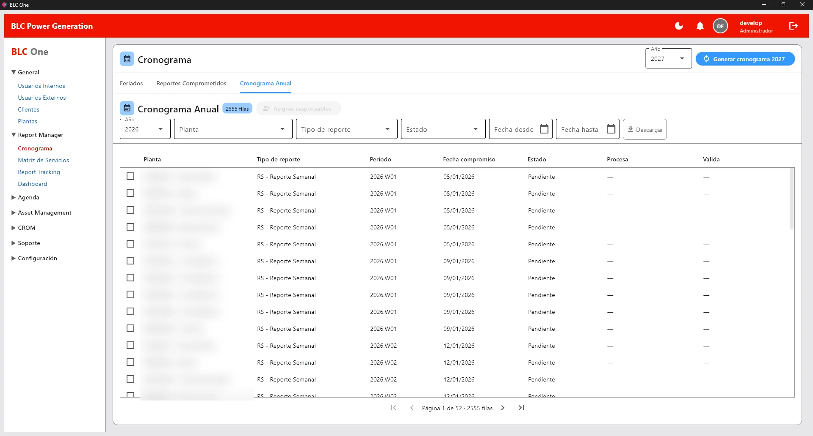
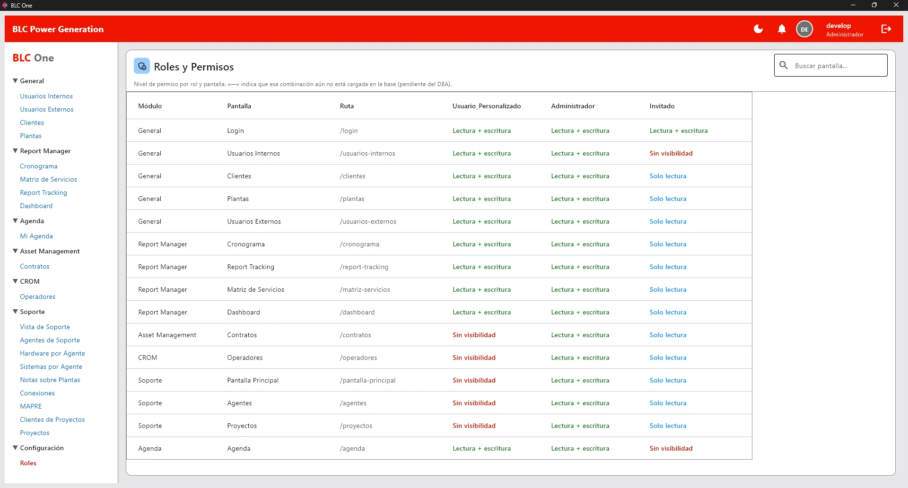
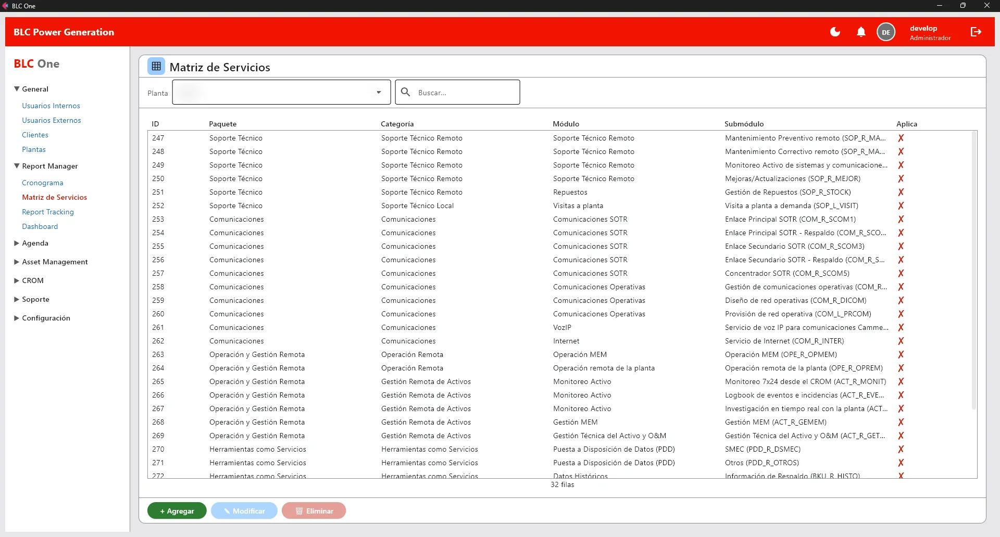
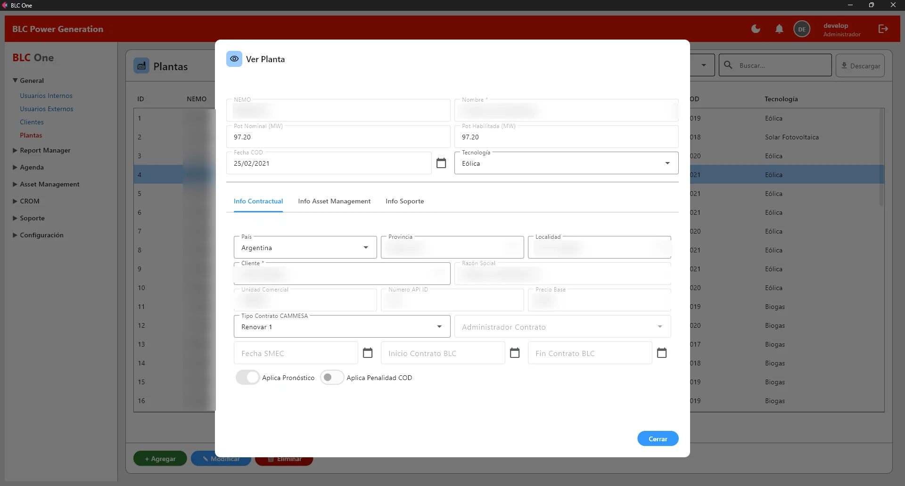
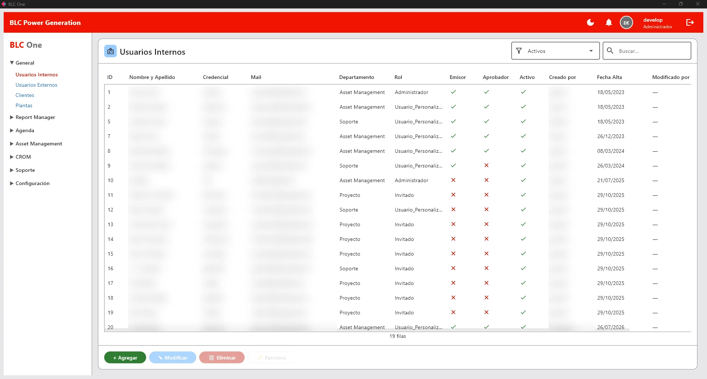

BLC One
Plataforma de gestión para el área de servicios de un grupo de energía renovable que opera remotamente cerca del 17% de la generación renovable del país. Centraliza plantas, contratos y compromisos regulatorios que vivían en planillas.
- 237plantas
- 2.555compromisos regulatorios
- 2.709tests automatizados
- 82decisiones de arquitectura documentadas
Aplicación interna sobre red privada. Los datos de clientes, plantas y personas están difuminados en las capturas.





El cronograma anual de compromisos regulatorios: 2.555 filas, filtrables por planta, tipo de reporte y estado.
El control de acceso: nivel de permiso de cada rol sobre cada pantalla, de lectura y escritura a sin visibilidad.
La matriz de servicios: qué paquetes, módulos y submódulos aplican a cada planta.
La ficha de una planta, con su información contractual, de gestión de activos y de soporte.
Usuarios internos con su rol y sus permisos de emisión y aprobación.
Tocá una captura para verla grande
El problema
Clientes, plantas, cronogramas de reportes ante el organismo regulador y agendas se manejaban en Excel y scripts sueltos. No había trazabilidad ni control de quién podía ver o modificar qué.
237 plantas y 2.555 compromisos regulatorios en Excel y scripts sueltos, sin trazabilidad ni control de accesos.
Todo en un sistema, con permisos por rol sobre quince pantallas y 2.709 tests que lo respaldan.
Lo que construí
- Ingreso y control de acceso por rol: tres roles sobre quince pantallas, permisos por ruta, modo de solo lectura y menú filtrado.
- Alta, baja y modificación de clientes, plantas con versionado histórico de configuraciones, y usuarios internos y externos.
- Gestor de reportes con cronograma anual, asignación de procesador y aprobador, seguimiento y matriz de servicios.
- Vista cruzada de plantas por tipo de reporte, con filtros por rango de fechas.
- Módulo de agenda con exportación a Excel en el formato exacto del cliente.
- Vista integrada de soporte sobre 216 agentes y pantalla de contratos.
- Ejecutable con asistente de primer arranque, datos de prueba y registro rotativo.